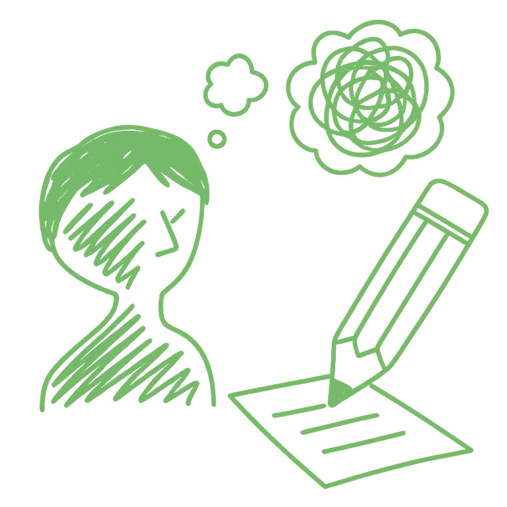

⌂ About
Work
Writing
Libin Fan
Contact
Writing

I like to observe the quiet details of everyday life and turn them into words. Writing helps me pause, reflect, and find meaning in both the ordinary and the unexpected.
A few key posts from
Medium
:
The Period That Matters:Menstruation, Illness, and Women’s Bodies
Creating in the Cracks: Motherhood, Art, and the Self I’m Still Becoming
See all of my writings posts on Medium >
See all of my Medium posts